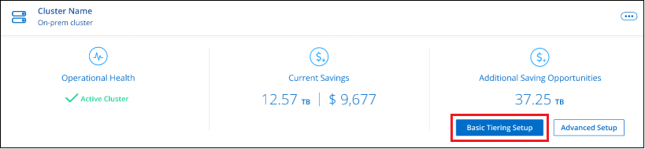
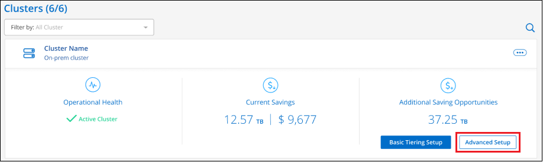

Demander de modifier un document
Demander de modifier un document Modifier sur GitHub
Modifier sur GitHub Guide des contributeurs
Guide des contributeursGestion du Tiering des données à partir des clusters
Contributeurs
Maintenant que vous avez configuré le Tiering des données à partir de vos clusters ONTAP sur site, vous pouvez hiérarchiser les données à partir de volumes supplémentaires, modifier la règle de Tiering d’un volume, découvrir d’autres clusters, etc.
Tiering des données à partir de volumes supplémentaires
Configurez un Tiering pour des volumes supplémentaires à tout moment, par exemple après la création d’un volume.

|
Il n’est pas nécessaire de configurer le stockage objet, car il était déjà configuré lors de la configuration initiale du Tiering pour le cluster. ONTAP effectue le Tiering des données inactives à partir de volumes supplémentaires vers le même magasin d’objets. |
-
Dans le menu de navigation de gauche, sélectionnez mobilité > hiérarchisation.
-
Dans Cluster Dashboard, cliquez sur Basic Tiering Setup pour le cluster.

-
Sur la page Tier volumes, sélectionnez les volumes que vous souhaitez configurer le Tiering et lancez la page Tiering Policy :
-
Pour sélectionner tous les volumes, cochez la case dans la ligne de titre (
 ) Et cliquez sur configurer les volumes.
) Et cliquez sur configurer les volumes. -
Pour sélectionner plusieurs volumes, cochez la case pour chaque volume (
 ) Et cliquez sur configurer les volumes.
) Et cliquez sur configurer les volumes. -
Pour sélectionner un seul volume, cliquez sur la ligne (ou
 icône) du volume.
icône) du volume.
-
-
Dans la boîte de dialogue Tiering Policy, sélectionnez une règle de hiérarchisation, vous pouvez éventuellement ajuster les jours de refroidissement des volumes sélectionnés, puis cliquez sur Apply.

Les volumes sélectionnés commencent à placer leurs données dans le cloud.
Modification de la règle de hiérarchisation d’un volume
La modification de la règle de Tiering pour un volume modifie la façon dont ONTAP transfère les données inactives vers le stockage objet. La modification commence dès que vous modifiez la stratégie. Elle modifie uniquement le comportement de Tiering ultérieur du volume ; les données ne sont pas déplacées rétroactivement vers le Tier cloud.
-
Dans le menu de navigation de gauche, sélectionnez mobilité > hiérarchisation.
-
Dans Cluster Dashboard, cliquez sur Tier volumes pour le cluster.
-
Cliquez sur la ligne d’un volume, sélectionnez une stratégie de hiérarchisation, ajustez éventuellement les jours de refroidissement, puis cliquez sur appliquer.
Remarque : si vous voyez des options pour "récupérer les données en tiers", voir data from the cloud tier back to the performance tier,Migration des données depuis le Tier cloud vers le Tier de performance pour plus d’informations.
La règle de Tiering est modifiée et les données commencent à être hiérarchisées en fonction de la nouvelle règle.
Migration des données depuis le Tier cloud vers le Tier de performance
Les données hiérarchisées accessibles depuis le cloud sont parfois « re-chauffées » et rétrogradées au niveau de performance. Toutefois, si vous souhaitez promouvoir de façon proactive les données vers le Tier de performance à partir du Tier cloud, vous pouvez le faire dans la boîte de dialogue Tiering Policy. Cette fonctionnalité est disponible lors de l’utilisation d’ONTAP 9.8 et versions supérieures.
Il est possible de désactiver le Tiering sur un volume ou de conserver toutes les données utilisateur sur le Tier de performance, mais aussi les copies Snapshot sur le Tier cloud.
Deux options sont disponibles :
| Option | Description | Incidence sur la règle de Tiering |
|---|---|---|
Récupérer toutes les données |
Récupère toutes les données de volume et les copies Snapshot hiérarchisées dans le cloud et les transfère sur le Tier de performance. |
La règle de Tiering est passée à l’état « aucune règle ». |
Rétablir le système de fichiers actif |
Récupère uniquement les données du système de fichiers actif hiérarchisées dans le cloud et les transfère sur le Tier de performance (les copies Snapshot restent dans le cloud). |
La règle de Tiering est passée aux « snapshots à froid ». |

|
Votre fournisseur cloud peut vous facturer le montant des données transférées hors du cloud. |
Assurez-vous de disposer d’un espace suffisant dans le Tier de performance pour toutes les données déplacées depuis le cloud.
-
Dans le menu de navigation de gauche, sélectionnez mobilité > hiérarchisation.
-
Dans Cluster Dashboard, cliquez sur Tier volumes pour le cluster.
-
Cliquez sur le bouton
Pour le volume, choisissez l’option de récupération que vous souhaitez utiliser, puis cliquez sur appliquer.
La règle de Tiering est modifiée et les données hiérarchisées commencent à être retransférées vers le Tier de performance. Selon la quantité de données dans le cloud, le processus de transfert peut prendre un certain temps.
Gestion des paramètres de Tiering sur les agrégats
Chaque agrégat de vos systèmes ONTAP sur site dispose de deux paramètres que vous pouvez ajuster : le seuil de remplissage du Tiering et si le reporting des données inactives est activé.
- Seuil de remplissage par niveaux
-
Si le seuil est inférieur, le volume de données à stocker sur le Tier de performance avant le Tiering est réduit. Ce fonctionnement peut s’avérer utile pour les agrégats volumineux qui contiennent peu de données actives.
Si la valeur du seuil est supérieure, la quantité de données à stocker sur le Tier de performance avant le Tiering est supérieure. Cela peut être utile pour les solutions conçues pour le Tiering uniquement lorsque les agrégats bénéficient d’une capacité quasi maximale.
- Reporting des données inactives
-
Le reporting des données inactives (IDR) utilise une période de refroidissement de 31 jours pour déterminer quelles données sont considérées comme inactives. La quantité de données inactives dans le Tier dépend des règles de Tiering définies sur les volumes. Cette quantité peut être différente de la quantité de données inactives détectée par l’IDR sur une période de refroidissement de 31 jours.
Il est préférable de maintenir l’option IDR activée car elle permet d’identifier vos données inactives et vos opportunités d’économies. L’IDR doit rester activé si le Tiering des données était activé sur un agrégat.
-
Dans Cluster Dashboard, cliquez sur Advanced Setup pour le cluster sélectionné.

-
Sur la page Configuration avancée, cliquez sur l’icône de menu de l’agrégat et sélectionnez Modifier l’agrégat.

-
Dans la boîte de dialogue qui s’affiche, modifiez le seuil de remplissage et choisissez d’activer ou de désactiver le rapport de données inactives.

-
Cliquez sur appliquer.
Révision des informations de hiérarchisation pour un cluster
Vous pouvez connaître la quantité de données stockées dans le Tier cloud et la quantité de données stockées sur les disques. Vous pouvez également voir la quantité de données actives et inactives sur les disques du cluster. NetApp Cloud Tiering fournit ces informations pour chaque cluster.
-
Dans le menu de navigation de gauche, sélectionnez mobilité > hiérarchisation.
-
Dans Cluster Dashboard, cliquez sur l’icône de menu d’un cluster et sélectionnez Cluster INFO.
-
Révision des détails du cluster.
Voici un exemple :

Vous pouvez également "Affichez les informations de hiérarchisation pour un cluster depuis Digital Advisor" Si vous connaissez déjà ce produit NetApp, Il vous suffit de sélectionner Cloud Recommendations dans le volet de navigation de gauche.

Corriger la santé opérationnelle
Les défaillances peuvent survenir. Et le cas fois, Cloud Tiering affiche l’état d’intégrité opérationnelle « défaillante » sur le tableau de bord du cluster. La santé reflète l’état du système ONTAP et BlueXP.
-
Identifiez tous les clusters dont l’état opérationnel est « en panne ».

-
Placez le pointeur de la souris sur le
 pour voir la raison de l’échec.
pour voir la raison de l’échec. -
Corriger le problème :
-
Vérifiez que le cluster ONTAP est opérationnel et qu’il dispose d’une connexion entrante et sortante avec votre fournisseur de stockage objet.
-
Vérifiez que BlueXP dispose de connexions sortantes vers le service Cloud Tiering, vers le magasin d’objets et vers les clusters ONTAP qu’il détecte.
-
Détection des clusters supplémentaires avec Cloud Tiering
Vous pouvez ajouter vos clusters ONTAP sur site non découverts à BlueXP à partir du tableau de bord des clusters Tiering Cluster, afin d’activer le Tiering pour le cluster.
Notez que les boutons s’affichent également sur la page Tiering On-locale Overview pour vous permettre de découvrir d’autres clusters.
-
Dans Cloud Tiering, cliquez sur l’onglet Tableau de bord des clusters.
-
Pour afficher les clusters non découverts, cliquez sur Afficher les clusters non découverts.

Si vos informations d’identification NSS sont enregistrées dans BlueXP, les clusters de votre compte s’affichent dans la liste.
Si vos informations d’identification NSS ne sont pas enregistrées dans BlueXP, vous êtes d’abord invité à ajouter vos informations d’identification avant de voir les clusters non découverts.
-
Faites défiler la page jusqu’à l’emplacement des clusters.

-
Cliquez sur Discover Cluster pour le cluster que vous souhaitez gérer via BlueXP et mettez en œuvre le Tiering des données.
-
Dans la Choose a Location page On-local ONTAP est présélectionné, il suffit de cliquer sur Continuer.
-
Sur la page ONTAP Détails du cluster, entrez le mot de passe du compte utilisateur admin et cliquez sur Ajouter.
Notez que l’adresse IP de gestion du cluster est renseignée sur la base des informations de votre compte NSS.
-
Sur la page Details & Credentials, le nom du cluster est ajouté en tant que Nom de l’environnement de travail, il vous suffit de cliquer sur Go.
BlueXP découvre le cluster et l’ajoute à un environnement de travail dans Canvas en utilisant le nom de cluster comme nom d’environnement de travail.
Vous pouvez activer le service Tiering ou d’autres services pour ce cluster dans le volet de droite.